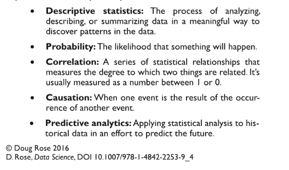

The GIS in Data Science
Guido Stein
Geospatial Data Alchemist
Applied Geographics, Inc.
Data Science
CartoFrames

| Data Scientist |
GIS Professional |
| Data Collection |
Data Collection |
| Data Organization |
Data Organization |
| Data Exploration |
Data Exploration |
| Data Analysis & Vizualization |
Data Analysis & Vizualization |